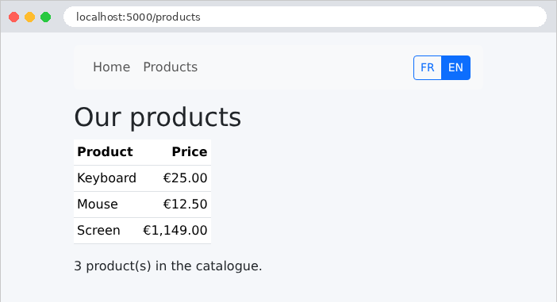
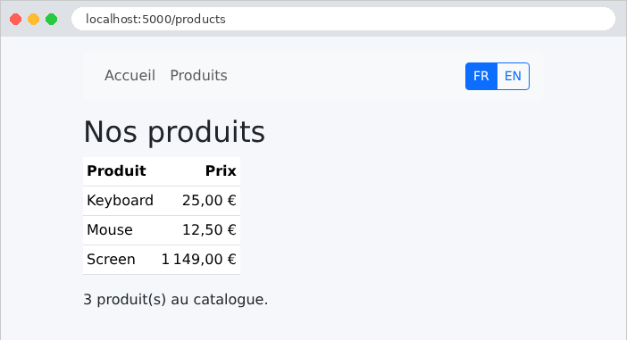

5. Internationalisierung
Eine internationalisierte Anwendung zeigt ihre Texte in der Sprache des Benutzers an. Die Fallstudie ist auf Französisch und Englisch verfügbar. Das Prinzip ist einfach: Die Views enthalten keine Texte mehr, sondern Schlüssel ([MENU.HOME]), und ein Wörterbuch pro Sprache ordnet jedem Schlüssel einen Text zu. Die gewählte Sprache wird in einem Cookie gespeichert.
Das [Flask]-Ökosystem bietet dafür eine Erweiterung, [Flask-Babel], die auf dem Standard-Übersetzungssystem [gettext] beruht: Texte werden von einem Werkzeug aus dem Code extrahiert, in [.po]-Dateien übersetzt und anschließend zu [.mo]-Dateien kompiliert. Das System ist leistungsfähig, erfordert aber spezielle Werkzeuge und einen Kompilierschritt. Stattdessen schreiben wir eine kleine Klasse, die JSON-Wörterbücher liest: Es sind dieselben Dateien wie in den Versionen [ASP.NET Core MVC], [NestJS] und [Spring MVC] der Fallstudie, und ihr Format lässt sich ohne spezielle Werkzeuge lesen und schreiben. Die Bibliothek [Babel] wird dagegen weiterhin für die Formatierung von Datumsangaben und Beträgen verwendet (Beispiel 16).
5.1. Beispiel 22: Eine zweisprachige Anwendung
| 22-i18n/
├── app.py
├── controllers/
│ ├── language.py
│ └── pages.py
├── i18n/
│ ├── en.json
│ └── fr.json
├── static/css/
│ └── styles.css
├── templates/
│ ├── fragments/
│ │ └── navbar.html
│ ├── layout.html
│ └── pages/
│ ├── home.html
│ └── products.html
└── translation/
├── formats.py
└── translator.py
|
5.1.1. Wörterbücher
Die Datei [i18n/fr.json]:
| {
"MENU": {
"HOME": "Accueil",
"PRODUCTS": "Produits"
},
"HOME": {
"TITLE": "Bienvenue",
"HELLO": "Bonjour {name} !",
"DATE": "Nous sommes le {date}."
},
"PRODUCTS": {
"TITLE": "Nos produits",
"NAME": "Produit",
"PRICE": "Prix",
"COUNT": "{n} produit(s) au catalogue."
}
}
|
Die Schlüssel sind thematisch in verschachtelten JSON-Objekten gruppiert: Der Menütext „Home“ hat den vollständigen Schlüssel [MENU.HOME]. Ein Text kann Platzhalter enthalten, die als [{name}] geschrieben und bei der Übersetzung ersetzt werden. Die Datei [i18n/en.json] hat exakt dieselben Schlüssel:
| {
"MENU": {
"HOME": "Home",
"PRODUCTS": "Products"
},
"HOME": {
"TITLE": "Welcome",
"HELLO": "Hello {name}!",
"DATE": "Today is {date}."
},
"PRODUCTS": {
"TITLE": "Our products",
"NAME": "Product",
"PRICE": "Price",
"COUNT": "{n} product(s) in the catalogue."
}
}
|
5.1.2. Der Übersetzungsservice: translation/translator.py
| # translation/translator.py: der Übersetzungs-Service
import json
import re
from pathlib import Path
from flask import g
class Translator:
LANGUAGES = ("fr", "en")
DEFAULT_LANGUAGE = "en"
# {name}: ein Parameter in einem Text
PARAMETER = re.compile(r"\{(\w+)\}")
def __init__(self, folder: Path):
# Sprache -> (vollständiger Schlüssel "HOME.HELLO" -> Text)
self._dictionaries: dict[str, dict[str, str]] = {}
for language in self.LANGUAGES:
with open(folder / f"{language}.json", encoding="utf-8") as file:
self._dictionaries[language] = self._flatten(json.load(file))
# die unterstützte Sprache, die zu [code] passt: "fr" -> "fr"; "de" oder None -> "en"
@classmethod
def language(cls, code: str | None) -> str:
return code if code in cls.LANGUAGES else cls.DEFAULT_LANGUAGE
# translate("HOME.HELLO", name="Marie") -> "Hello Marie!", in der
# Sprache der aktuellen Anfrage (g.language, siehe app.py)
def translate(self, key: str, **parameters) -> str:
# ein fehlender Schlüssel zeigt den Schlüssel selbst an: ein Versäumnis ist auf dem Bildschirm sichtbar
text = self._dictionaries[g.language].get(key, key)
# jedes {name} wird durch den Wert des gleichnamigen Parameters ersetzt
return self.PARAMETER.sub(
lambda m: str(parameters.get(m.group(1), m.group(0))), text)
# { "MENU": { "HOME": "Home" } } -> { "MENU.HOME": "Home" }
@classmethod
def _flatten(cls, node: dict, prefix: str = "") -> dict[str, str]:
result = {}
for key, value in node.items():
full_key = f"{prefix}.{key}" if prefix else key
if isinstance(value, dict):
result.update(cls._flatten(value, full_key))
else:
result[full_key] = value
return result
|
- Zeilen 11–12: die unterstützten Sprachen und die Standardsprache – Klassenattribute , die von allen Objekten der Klasse gemeinsam genutzt werden und ohne Objekt zugänglich sind ([Translator.LANGUAGES]);
- Zeile 15: der reguläre Ausdruck für einen Parameter: eine geschweifte Klammer ([\{], mit vorangestelltem [\] , weil die geschweifte Klammer in regulären Ausdrücken eine besondere Bedeutung hat), ein oder mehrere Wortzeichen ([\w+]) und eine schließende geschweifte Klammer. Die Klammern erfassen den Namen des Parameters. [re.compile] analysiert den Ausdruck ein für alle Mal;
- Zeilen 17–22: Der Konstruktor liest die Wörterbücher einmalig, beim Erzeugen des Services. [json.load] wandelt den Inhalt einer JSON-Datei in [Python]-Objekte um (verschachtelte Wörterbücher). [with open(...) as file] öffnet die Datei und stellt sicher, dass sie am Ende des Blocks geschlossen wird; [encoding="utf-8"] ist unverzichtbar, da die Standardcodierung vom System abhängt (unter [Windows] ist sie nicht immer [UTF-8]);
- Zeilen 25–27: Eine Klassenmethode (Dekorator [@classmethod]) erhält statt eines Objekts die Klasse ([cls]); sie wird auf der Klasse aufgerufen: [Translator.language("en")]. Sie liefert die unterstützte Sprache, die einem Code entspricht, oder die Standardsprache, wenn der Code unbekannt ist oder fehlt;
- Zeilen 31–36: die Übersetzung eines Schlüssels in der Sprache der aktuellen Anfrage, gelesen aus [g.language] (siehe Beispiel 16). Ein im Wörterbuch fehlender Schlüssel wird unverändert angezeigt: Eine Lücke ist sofort auf dem Bildschirm sichtbar. Die Parameter werden als benannte Parameter entgegengenommen ([**parameters]); die Methode [sub] des regulären Ausdrucks ersetzt jeden im Text gefundenen Parameter durch das Ergebnis einer Funktion – hier eine anonyme Funktion ([lambda m: ...]) –, die den gefundenen Treffer erhält ([m]): [m.group(1)] ist der erfasste Name, [m.group(0)] ist der vollständige Text [{name}], der beibehalten wird, wenn der Parameter nicht angegeben wurde;
- Zeilen 40–48: Die verschachtelten JSON-Objekte werden zu einem einzigen Wörterbuch „flachgeklopft“, dessen Schlüssel die vollständigen Schlüssel sind: [{"MENU": {"HOME": "Home"}}] wird zu [{"MENU.HOME": "Home"}]. Die Methode ist rekursiv: Sie ruft sich für jedes verschachtelte Objekt selbst auf und verwendet den aktuellen Schlüssel als Präfix.
| # translation/formats.py: Datums- und Betragsangaben, in der Sprache der Anfrage formatiert (siehe Beispiel 16)
from datetime import date
from decimal import Decimal
from babel.dates import format_date
from babel.numbers import format_currency
from flask import g
# ein Datum in ausgeschriebenen Worten
def long_date(day: date) -> str:
return format_date(day, format="full", locale=g.language)
# ein Betrag in Euro
def money(amount: Decimal) -> str:
return format_currency(amount, "EUR", locale=g.language)
|
Die Filter aus Beispiel 16, die diesmal [g.language] verwenden. [Babel] akzeptiert eine einzelne Sprache ([fr], [en]) ebenso wie eine Sprache mit einem Land ([fr_FR]); für [en] gelten die US-amerikanischen Konventionen.
5.1.4. Konfiguration: app.py
| # app.py: die Anwendung von Beispiel 22
from pathlib import Path
from flask import Blueprint, Flask, g, request
from controllers.language import LANGUAGE_COOKIE, language
from controllers.pages import pages
from translation import formats
from translation.translator import Translator
# Bootstrap, von den Beispielen gemeinsam genutzt (siehe Beispiel 15)
BOOTSTRAP = Path(__file__).resolve().parent.parent / "common" / "bootstrap"
def create_app():
app = Flask(__name__)
app.jinja_env.trim_blocks = True
app.jinja_env.lstrip_blocks = True
# der Übersetzungs-Service: die Wörterbücher, EINMAL beim Start gelesen
translator = Translator(Path(app.root_path) / "i18n")
app.extensions["translator"] = translator
app.register_blueprint(Blueprint("bootstrap", __name__, static_folder=BOOTSTRAP,
static_url_path="/bootstrap"))
app.register_blueprint(language)
app.register_blueprint(pages)
# die Sprache jeder Anfrage: die des Cookies [language], sonst Englisch
@app.before_request
def set_language():
g.language = Translator.language(request.cookies.get(LANGUAGE_COOKIE))
# in den Views: {{ t('KEY') }}, {{ day | long_date }}, {{ price | money }}
app.add_template_global(translator.translate, "t")
app.add_template_filter(formats.long_date)
app.add_template_filter(formats.money)
return app
if __name__ == "__main__":
create_app().run(port=5000, debug=True)
|
- Zeilen 20–21: der Service, einmalig beim Start erzeugt. [app.root_path] ist der Ordner der Anwendung (der von [app.py]);
- Zeilen 28–30: Vor jeder Aktion wird die Sprache der Anfrage auf die Sprache des Cookies [language] gesetzt, sofern es existiert und die Sprache unterstützt wird; andernfalls ist sie standardmäßig Englisch. [request.cookies] ist das Wörterbuch der vom Browser gesendeten Cookies;
- Zeile 33: Die Methode [translate] des Services wird den Views als globale Funktion unter einem kurzen Namen bereitgestellt, [t] (der zweite Parameter von [add_template_global]). Eine Objektmethode wird wie eine Funktion verwendet: [translator.translate] ist eine dem Objekt [translator] zugeordnete Methode.
5.1.5. Sprachauswahl: controllers/language.py
| # controllers/language.py: die Wahl der Sprache
from urllib.parse import urlsplit
from flask import Blueprint, abort, redirect, request
from translation.translator import Translator
language = Blueprint("language", __name__)
LANGUAGE_COOKIE = "language"
# GET /language/fr: speichert die Wahl in einem Cookie und kehrt dann zur vorherigen Seite zurück
@language.get("/language/<code>")
def change(code):
if code not in Translator.LANGUAGES:
abort(404)
response = redirect(origin_page())
# das Cookie: ein Jahr Lebensdauer, für das JavaScript der Seite nicht lesbar (httponly),
# wird nie mit einer POST-Anfrage von einer anderen Website gesendet (samesite)
response.set_cookie(LANGUAGE_COOKIE, code, max_age=365 * 24 * 3600, httponly=True,
samesite="Lax")
return response
# die Seite, von der wir kommen (Header Referer), von der wir nur den Pfad behalten:
# eine Weiterleitung auf eine vollständige, der Anfrage entnommene Adresse würde es erlauben,
# den Benutzer auf eine andere Website zu schicken (Schwachstelle "Open Redirect")
def origin_page() -> str:
url = urlsplit(request.headers.get("Referer", ""))
path = url.path
# "//site.com/..." würde vom Browser als Adresse
# auf einer ANDEREN Website verstanden: ebenfalls abgelehnt
if not path.startswith("/") or path.startswith("//"):
return "/"
return f"{path}?{url.query}" if url.query else path
|
- Zeile 16: ein unbekannter Sprachcode: 404;
- Zeile 18: Die Aktion antwortet mit einer Umleitung auf die Seite, von der der Benutzer kam: Der Benutzer kehrt auf diese Seite zurück, nun in der neuen Sprache;
- Zeilen 21–22: Die Antwort enthält ein Cookie, das der Browser bei jeder Anfrage zurücksendet. [max_age] ist seine Lebensdauer in Sekunden: ein Jahr. [httponly=True] macht es für das [JavaScript] der Seite unsichtbar; [samesite="Lax"] verhindert, dass der Browser es bei einer POST-Anfrage sendet, die von einer anderen Website stammt. Anders als das Session-Cookie (Beispiel 20) ist dieses Cookie nicht signiert: Es ist unproblematisch, wenn der Benutzer es ändert, da der Server nur unterstützte Sprachen akzeptiert;
- Zeilen 29–36: Die ursprüngliche Seite wird durch den Header [Referer] der Anfrage angegeben (die falsch geschriebene Variante mit nur einem [r] ist die im HTTP-Standard verwendete), den der Browser mit der URL der Seite füllt, die den Link enthielt. Dieser Header stammt jedoch vom Client, der beliebige Inhalte hineinschreiben kann. Würde man blind auf diese Adresse umleiten, wäre unsere Anwendung ein *Open Redirect*: Ein bösartiger Link mit unserem Domainnamen könnte den Benutzer auf eine schädliche Website schicken. Deshalb behalten wir nur den Pfad und die Parameter der URL ([urlsplit] zerlegt sie in ihre Bestandteile) und weisen jeden Pfad zurück, der mit [//] beginnt, den der Browser als Adresse einer anderen Website interpretieren würde.
5.1.6. Aktionen: controllers/pages.py
| # controllers/pages.py: die Actions wissen nichts von der Sprache: sie
# liefern Daten, die Views übersetzen und formatieren sie
from dataclasses import dataclass
from datetime import date
from decimal import Decimal
from flask import Blueprint, render_template
pages = Blueprint("pages", __name__)
@dataclass
class Product:
name: str
price: Decimal
@pages.get("/")
def home():
return render_template("pages/home.html", name="Marie", today=date(2026, 9, 23))
@pages.get("/products")
def products():
return render_template("pages/products.html", products=[
Product("Keyboard", Decimal("25")),
Product("Mouse", Decimal("12.5")),
Product("Screen", Decimal("1149")),
])
|
Die Aktionen sind sprachunabhängig: Sie liefern Rohdaten (einen Namen, ein Datum, Beträge). Übersetzung und Formatierung übernehmen die Views.
5.1.7. Übersetzen in den Views
| <!doctype html>
{# g.language: die Sprache der Anfrage, "fr" oder "en" #}
<html lang="{{ g.language }}">
<head>
<meta charset="utf-8">
{# der Titel ist ein SCHLÜSSEL, von der Seite geliefert (Variable title_key) und vom Layout übersetzt #}
<title>{{ t(title_key) }}</title>
<link rel="stylesheet" href="{{ url_for('bootstrap.static', filename='css/bootstrap.min.css') }}">
<link rel="stylesheet" href="{{ url_for('static', filename='css/styles.css') }}">
</head>
<body>
<div class="container py-3">
{% include "fragments/navbar.html" %}
<main>
{% block content %}{% endblock %}
</main>
</div>
</body>
</html>
|
- Zeile 3: Das Attribut [lang] der Seite teilt Browsern, Suchmaschinen und Screenreadern ihre Sprache mit;
- Zeile 7: Der Seitentitel ist auf jeder Seite anders, wird aber vom Template übersetzt. Jede Seite liefert in einer Variablen, [title_key], den Schlüssel ihres Titels.
| <nav class="navbar navbar-expand bg-light rounded mb-3 px-3">
<div class="navbar-nav me-auto">
{# t('KEY'): die Übersetzung eines Schlüssels in der Sprache der Anfrage #}
<a class="nav-link" href="/">{{ t("MENU.HOME") }}</a>
<a class="nav-link" href="/products">{{ t("MENU.PRODUCTS") }}</a>
</div>
{# die aktuelle Sprache wird hervorgehoben #}
<div class="btn-group btn-group-sm">
{% for code in ["fr", "en"] %}
<a class="btn {{ 'btn-primary' if g.language == code else 'btn-outline-primary' }}"
href="/language/{{ code }}">{{ code | upper }}</a>
{% endfor %}
</div>
</nav>
|
- Zeilen 4–5: die übersetzten Menütexte;
- Zeilen 9–12: ein Button pro Sprache, der zur Aktion [/language/<code>] führt. Die aktuelle Sprache ist hervorgehoben ([btn-primary], ausgefüllter Button).
| {% extends "layout.html" %}
{# eine AUSSERHALB der Blöcke definierte Variable ist für das Layout sichtbar #}
{% set title_key = "HOME.TITLE" %}
{% block content %}
<h1>{{ t("HOME.TITLE") }}</h1>
{# ein Parameter: ein Schlüsselwortparameter der Funktion t #}
<p>{{ t("HOME.HELLO", name=name) }}</p>
{# das Datum, zuerst formatiert, dann als Parameter [date] übergeben #}
<p>{{ t("HOME.DATE", date=today | long_date) }}</p>
{% endblock %}
|
- Zeile 3: Eine Variable, die außerhalb der Blöcke einer Seite definiert wird, die ein Template erweitert, ist für das Template sichtbar: So übergibt die Seite ihren Titelschlüssel an das Template. (Eine innerhalb eines Blocks definierte Variable bliebe dagegen lokal für diesen Block.);
- Zeile 8: Ein Textparameter ist ein benannter Parameter der Funktion [t];
- Zeile 10: Das Datum, in der Sprache der Anfrage formatiert und dann als Parameter übergeben.
| {% extends "layout.html" %}
{% set title_key = "PRODUCTS.TITLE" %}
{% block content %}
<h1>{{ t("PRODUCTS.TITLE") }}</h1>
<table class="table table-sm w-auto">
<thead><tr><th>{{ t("PRODUCTS.NAME") }}</th><th class="text-end">{{ t("PRODUCTS.PRICE") }}</th></tr></thead>
<tbody>
{% for product in products %}
<tr>
<td>{{ product.name }}</td>
<td class="text-end">{{ product.price | money }}</td>
</tr>
{% endfor %}
</tbody>
</table>
<p>{{ t("PRODUCTS.COUNT", n=products | length) }}</p>
{% endblock %}
|
- Zeile 17: ein berechneter Parameter. Die Produktnamen werden dagegen nicht übersetzt: Sie sind Daten, die in einer realen Anwendung aus einer Datenbank stammen würden.
5.1.8. Ausführung
Die Startseite auf Englisch (der Standardsprache) und danach auf Französisch, nach einem Klick auf den Button „FR“:


Die Produktseite in beiden Sprachen. Die Beträge folgen den Konventionen der jeweiligen Sprache:


Der Sprachwechsel, gesehen mit [curl]. Die Option [-H] liefert den Header [Referer] , den der Browser senden würde:
| curl -i -H "Referer: http://localhost:5000/products" http://localhost:5000/language/en
|
| HTTP/1.1 302 FOUND
Content-Type: text/html; charset=utf-8
Content-Length: 205
Location: /products
Set-Cookie: language=en; Expires=Sun, 26 Sep 2027 13:37:04 GMT; Max-Age=31536000; HttpOnly; Path=/; SameSite=Lax
...
|
Die Umleitung führt zur ursprünglichen Seite zurück, und das Cookie wird für ein Jahr gesetzt. Ein [Referer] , der auf eine andere Website verweist, führt nicht zu einer Umleitung dorthin: Nur sein Pfad wird beibehalten.
| curl -i -H "Referer: https://pirate.example/trap" http://localhost:5000/language/en
curl -i -H "Referer: http://localhost:5000//pirate.example/x" http://localhost:5000/language/fr
|
| HTTP/1.1 302 FOUND
...
Location: /trap
HTTP/1.1 302 FOUND
...
Location: /
|
Die Seite [/trap] existiert auf unserer Website nicht: Der Benutzer erhält einen 404-Fehler, bleibt aber auf unserer Website. Schließlich die Startseite, angefordert mit dem Cookie [language=en] (Option [-b] von [curl]):
| curl -b "language=en" http://localhost:5000/
|
| <!doctype html>
<html lang="en">
<head>
<meta charset="utf-8">
<title>Welcome</title>
...
<a class="nav-link" href="/">Home</a>
<a class="nav-link" href="/products">Products</a>
...
<h1>Welcome</h1>
<p>Hello Marie!</p>
<p>Today is Wednesday, September 23, 2026.</p>
...
|
Eine andere Möglichkeit, die Sprache auszuwählen, wäre gewesen, den Header [Accept-Language] des Browsers auszulesen (Beispiel 12). Beides wird oft kombiniert: die Sprache des Browsers beim ersten Besuch, danach die vom Benutzer gewählte Sprache. Diese Fallstudie konzentriert sich auf das Cookie, mit Englisch als Standardsprache.